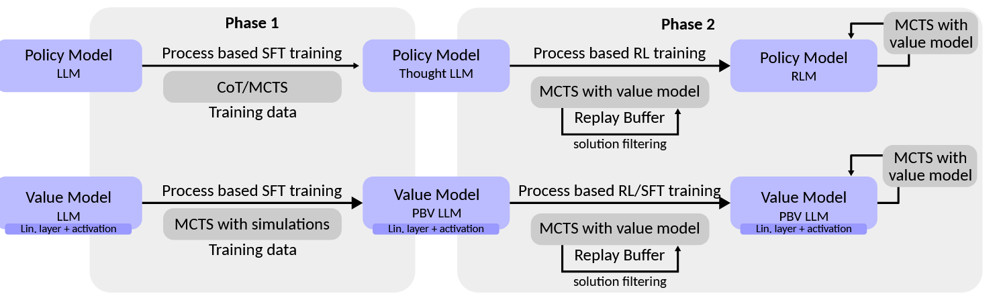

时序差分算法
对于大部分强化学习现实场景（例如电子游戏或者一些复杂物理环境），其马尔可夫决策过程的状态转移概率（即模型）是无法被完整表述的。在这种情况下，智能体只能和环境进行交互，通过采样到的数据来学习，在上一篇的结尾，我们提到了蒙特卡洛方法，这就是一个不基于模型的强化学习方法。
然而，由于采样具有不确定性，MC 方法的方差挺大的。因此我们提出了时序差分算法（TD），这是一种用来估计策略的价值函数的方法，它结合了蒙特卡洛和动态规划算法的思想：时序差分方法和蒙特卡洛的相似之处在于可以从样本数据中学习，不需要事先知道环境；和动态规划的相似之处在于贝尔曼方程的思想，利用后续状态的价值估计来更新当前状态的价值估计。
我们先不假思索地给出 TD 算法的表达式：
其中 表示在第 时间步上对于状态价值的估计，而 表示在轨迹的第 步上采样得到的状态。
我们一般把 后边的一坨称作 TD Error，而一坨之中的后者称其为 TD Target.
观察这个式子，我们不难得出以下结论：（1）TD 算法利用了梯度下降的思想，使得 不断朝着 TD Target 的方向去逼近；（2）并且当 TD Error 最终为零时， 会收敛到 ，将 代入上式不难求得。
TD 算法本质上就是在没有模型的情况下求解贝尔曼公式，即估计给定 的状态函数。尽管 TD 算法并不能直接用于找寻最优策略，但他是后续算法开展的基石。将 TD 和 MC 两个方法对比，结果如下：
| TD/Sarsa learning | MC learning |
|---|---|
| Online: TD learning is online. It can update the state/action values immediately after receiving a reward. | Offline: MC learning is offline. It has to wait until an episode has been completely collected, and updates them all. |
| Continuing tasks: Since TD learning is online, it can handle both episodic and continuing tasks. | Episodic tasks: Since MC learning is offline, it can only handle episodic tasks that have terminate states. |
| Bootstrapping: TD bootstraps because update relies on the previous estimate of this value. Hence, it requires initial guesses and has bias. | Non-bootstrapping: MC is not bootstrapping, because it can directly estimate state/action values without any initial guess. It is unbiased estimate method. |
| Low estimation variance: TD has lower variance than MC because there are fewer random variables. For instance, Sarsa requires ( ). | High estimation variance: To estimate ( ), we need samples of ( ), there are $ |
Sarsa
对于状态价值函数的策略评估已经可以通过时序差分算法实现，那么在不知道奖励函数和状态转移函数的情况下，该怎么进行策略提升呢？答案是可以直接用时序差分算法来估计动作价值函数：
求解出了动作价值函数，我们就可以贪心地选择价值最高的动作，去更新我们的策略了 — — 当然也可以采用 的方式去做个平衡。但其实本质上和 TD 算法是一样的，都是提供了一个无模型的方法解贝尔曼公式。
除此以外，Sarsa 也有两种变式。Expected Sarsa 采用对下一步动作的回报取期望的形式，这样可以简化掉一个估计量（）；n-step Sarsa 采用了将 Sarsa 和 Monte Carlo 相结合的方式，尝试多往后边儿采样 n steps，这样对回报的估值就越精准，越来越接近无偏的期望值。

Q 学习
除了 Sarsa，还有一种非常著名的基于时序差分算法的强化学习算法 — — Q-learning。Q-learning 和 Sarsa 的最大区别在于其时序差分更新方式为：
其实本质来说，就是从求解贝尔曼方程转为求解贝尔曼最优方程。
在线策略算法与离线策略算法
我们先给出行为策略和目标策略的定义：
- 采样数据的策略为行为策略（behavior policy），是用来收集数据的。
- 称用这些数据来更新的策略为目标策略（target policy），是最后要用的。
在线策略（on-policy）算法表示行为策略和目标策略是同一个策略，而离线策略（off-policy）算法表示行为策略和目标策略不是同一个策略。离线策略的优势是：如果有之前别人拿其他策略积累得到的经验，我们可以直接拿过来用以自身学习；如果采用 Greedy 的策略，探索性就会较弱，不能穷举所有的 。
举个例子，Sarsa 是典型的在线策略算法，而 Q-learning 是典型的离线策略算法。原因在于：观察 Q-learning 的更新公式可知，当给定 时， 和 是与策略无关的，仅与环境有关；那么我们完全可以采取另一种探索性更强的行为策略 ，根据 去采样一个 ，最后用来优化我们的 Q-learning 对应的目标策略 —— 选择 最大的那个动作即可。
总体来讲，更新依赖行为策略 的概率分布的算法不适合 On-Policy.
总结
不管是 Sarsa/Q-learning，TD 算法的核心都是让当前的动作价值函数 去逼近目标价值函数 . 不同算法之间的 如下：

值函数近似
之前的强化学习均采用的是矩阵的方式，建立一张存储每个状态下所有动作 Q 值的表格。而表格是无法胜任状态or动作连续的情况。
对于这种情况，我们需要用函数拟合的方法来估计值，我们将这个复杂的真实状态表格视作，使用一个参数化的函数 来拟合这些数据。
这里我们采用均方误差（MSE）作为我们的目标函数：
这里求期望既可以将状态视为均匀分布，也可以视作平稳分布（用稳定后的出现频率代替概率）。平稳分布下不同状态出现的概率可以通过求特征值的方式得到。
为了优化这个目标函数，自然可以采用梯度下降的方式，求梯度：
在上式中， 是要被近似的对象，无法直接获取，我们有几种办法：
- 蒙特卡洛方法：用单条轨迹的实际回报 作为 的无偏估计
- 时序差分（TD）：用 作为目标，实现增量更新
DQN
值函数近似用以求解状态的近似值。为了搜索最优策略（策略提升），我们还需要估计动作价值函数。之前提到的 Sarsa 和 Q-learning 自然可以套用值函数近似，不多赘述，直接来看终极版 DQN（Deep Q-Network）。
由于神经网络具有强大的表达能力，可以拟合某种线性/非线性的函数，因此我们可以用一个神经网络来表示函数 Q。我们将用于拟合函数Q的神经网络称为 Q 网络。
DQN 的目标函数如下：
DQN 中还有两个非常重要的模块——目标网络和经验回放，它们能够帮助 DQN 取得稳定、出色的性能。
目标网络
DQN 算法最终更新的目标是让 逼近 TD-target，由于 TD-target 目标本身就包含神经网络的输出，因此在更新网络参数的同时目标也在不断地改变，这非常容易造成神经网络训练的不稳定性（不收敛？）。
为了解决这一问题，DQN 便使用了目标网络（target network）的思想：既然训练过程中 Q 网络的不断更新会导致目标不断发生改变，不如暂时先将 TD-target 中的 Q 网络固定住。
为了实现这一思想，我们需要利用两套 Q 网络：
- 原来的训练网络 ，用以正常地网络训练and参数更新。
- 目标网络 ，为了让更新目标更稳定，目标网络并不会每一步都更新。具体来讲，目标网络使用训练网络较旧的一套参数，每隔步才会与训练网络同步一次更新。
这样 DQN 的目标函数可以表示为：
注意到 TD-target 的网络已经被替换为目标网络 ，这样求梯度的时候只有后边儿的一项包含 了。求梯度可得：
经验回放
由于 DQN 是离线策略算法，因此我们在收集数据的时候可以用一个 贪婪策略来平衡探索与利用，将收集到的数据存储起来，在后续的训练中使用。
在一般的有监督学习中，假设训练数据是独立同分布的，我们每次训练神经网络的时候从训练数据中随机采样一个或若干个数据来进行梯度下降，随着学习的不断进行，每一个训练数据会被使用多次。
DQN 算法采用了经验回放（experience replay）方法，具体做法为维护一个回放缓冲区，将每次从环境中采样得到的四元组数据（状态、动作、奖励、下一状态）存储到回放缓冲区中，训练 Q 网络的时候再从回放缓冲区中随机采样若干数据来进行训练。这么做可以起到以下两个作用：
（1）使样本满足IID假设。在 MDP 中交互采样得到的数据本身不满足IID假设，因为这一时刻的状态和上一时刻的状态有关。非独立同分布的数据对训练神经网络有很大的影响，会使神经网络拟合到最近训练的数据上。采用经验回放可以打破样本之间的相关性，让其满足IID假设。
（2）提高样本效率。每一个样本可以被使用多次，十分适合深度神经网络的梯度学习。
DQN 改进算法
1. Double DQN
普通的 DQN 算法通常会导致对值的过高估计（overestimation）。传统 TD 误差目标为 ，其中 也是被目标网络计算选择的。换句话说，这个操作就是先选取 状态下的最优动作，接着计算该动作对应的价值。
当这两部分采用同一套 Q 网络进行计算时，每次得到的都是神经网络当前估算的所有动作价值中的最大值。考虑到通过神经网络估算的值本身在某些时候会产生正向或负向的误差，在 DQN 的更新方式下神经网络会将正向误差累积 — ·— 就像是一个学生自己出题、自己答题、自己评分，很容易对自己的答案过于自信，导致错误被放大。
Double DQN 采用两套神经网络，让它们分别负责不同的任务：
- 第一套网络（在线网络）先选择价值最高的动作，相当于出题。
- 第二套网络（目标网络）再根据这个动作估算真正的价值，相当于评分。
改动也很简单，把目标改为 即可。Double DQN 的优化目标为 ，动作的选取依靠训练网络 。
2. Dueling DQN
在强化学习中，我们将状态动作价值函数 Q 减去状态价值函数 V 的结果定义为优势函数 A，即 。在同一个状态下，所有动作的优势值之和为 0，因为所有动作的动作价值的期望就是这个状态的状态价值。
在 Dueling DQN 中，Q 网络被建模为：
其中 是状态价值函数和优势函数共享的网络参数，一般用在神经网络中，用来提取特征的前几层；而 α 和 β 分别为状态价值函数和优势函数的参数。
所以为啥要引入优势函数呢？ 某些情境下，智能体只会关注状态的价值，而并不关心不同动作导致的差异。此时将状态和动作分开建模，能够使智能体更好地处理与动作关联较小的状态。
对于 Dueling DQN 中的公式 ，它存在建模不唯一的问题。例如，对于同样的 值，如果将 值加上任意大小的常数 ，再将所有 值减去 ，则得到的 值依然不变，这就导致了训练的不稳定性。
为了解决这一问题，Dueling DQN 强制最优动作的优势函数的实际输出为 0：
此时 ，可以确保 值建模的唯一性。在实现过程中，我们还可以用平均代替最大化操作，即：
此时 。在下面的代码实现中，我们将采取此种方式，虽然它不再满足贝尔曼最优方程，但实际应用时更加稳定。
RL LLM 前瞻
学习到这里，其实就可以对大模型运用强化学习的原理做一下初步解读了（我猜）。要是有不准确的地方，那就等之后的我打个回旋镖吧。

这篇论文 对大模型的强化学习进行了数学建模。
具体来说，大模型推理的时候可以视作在构建推理链（Reasoning chains），这是构建 LLMs 的基础。如何将马尔可夫决策过程（MDPs）应用于推理链呢？
1. 状态 (State) 的定义
- 在 LLMs 中，状态 s 被定义为一系列推理步骤 ，其中每个推理步骤 是一个由多个标记 组成的序列。
- 每个推理步骤 可以用一个特殊的标记 来表示结束。
- 初始查询 q 通常作为第一个推理步骤 。
2. 动作 (Action) 的定义
- 动作 a 通常表示在当前状态 s 中追加一个新的推理步骤 ，从而生成新的状态：，可以理解为生成了新的一步骤
- 每个动作 a 唯一对应一个推理步骤 ，因此可以建立动作空间 A 和推理步骤空间 Z 之间的双射关系 。
3. 奖励函数 (Reward Function)
- 奖励函数 r(s,a,s′) 通常只在终端状态（即最终推理步骤）给予非零奖励。
- 例如，对于数学推理任务，最终答案可以与标准答案进行比较，从而确定奖励值。
- 当然，对于 PRM 来说，也可以对于中间步骤打分。
4. 策略 (Policy)
- 策略 定义了在状态 s 下选择动作 a 的概率分布。
- 由于动作空间 A 和推理步骤空间 Z 之间存在双射关系，策略可以表示为 ，其中 。
5. 策略模型（Policy Model）
我们使用参数为 的预训练模型 M 作为策略模型，记为 ，本质上就是输入状态 s 、输出下一个可能的推理步骤，非常 make sense.
6. 价值模型（Value Model）
- 用以计算状态 s 的价值的模型，记作 or .
- 注意和奖励模型（Reward Model）区分：
- 价值模型的主要功能是评估状态或状态-动作对的长期价值，即从当前状态出发，按照某种策略继续行动所能获得的预期累积奖励。
- 奖励模型的主要功能是评估在特定状态下采取某个动作后立即获得的奖励。在RLM中，奖励模型通常用于评估推理步骤的质量，即在状态 s 下采取动作 a 后转移到状态 s′ 的即时奖励 。
- 但好像实际应用场景下，这两个是不做区分的？至少我看论文里写的二者本质上都是语言模型套一个分类头，然后SFT.
Phase 1: SFT
- 先 SFT 和 .
Phase 2: RL
- 采用一个没有在 Phase1 出现过的 Question 数据集，首先在 和 上做 MCTS，采样若干条到达推理终点的轨迹。将这些数据保存在 Replay Buffer 中。
- RL阶段，从 Replay Buffer 中采样一批推理轨迹。从每个轨迹中，利用状态，动作和价值等信息进行RL训练（例如 PPO）。替代方案可能涉及在轨迹之间选择偏好对，然后使用DPO对齐策略。（To Be Continue…）